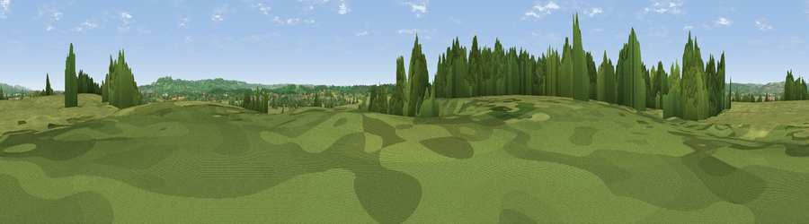

Viewpoint near Hill
#23974 in England · top 40% of its area beats it · near HillThe view, rendered

A 360° render of this exact spot computed from the terrain model, tree cover and land cover — summer colours, afternoon light, calibrated against photographs of famous viewpoints. Real trees, hedges and buildings will differ in detail.
The panorama
Grey silhouette: terrain skyline in each direction (720 bearings, Earth curvature and refraction included). Dashed green: skyline with trees (+15 m) and buildings (+8 m) as obstacles. Blue strip: how far the ground is visible on each bearing.
Where the view opens
Wedge length = distance to the farthest visible ground on that bearing (vegetation-aware). Rings at 10, 25 and 50 km.
What fills the view
54% grassland · 29% woodland · 14% cropland · 2% water · 1% built-up
Angular shares of the visible panorama (visual magnitude), not map area. Landscape diversity 0.48 (0–1 Shannon).
Key numbers
More beautiful places nearby
The staircase of upgrades: each row has a higher view potential than everything closer. Driving times are estimates from straight-line distance, calibrated against real road routing — check an actual route before setting out.
| Place | Direction | Drive | Score |
|---|---|---|---|
| Viewpoint near Rockhampton | SSE · 3 km | ~7 min | 51.9 |
| Viewpoint near Rockhampton | S · 4 km | ~9 min | 52.6 |
| Viewpoint near Tortworth | SE · 5 km | ~10 min | 57.5 |
| Viewpoint near Stinchcombe | ENE · 8 km | ~16 min | 80.5 |
| Garway Hill | NW · 37 km | ~55 min | 84.6 |
| Millennium Hill | NNE · 45 km | ~65 min | 86.9 |
| Worcestershire Beacon | NNE · 50 km | ~71 min | 87.1 |
| Viewpoint near West Quantoxhead | SW · 76 km | ~100 min | 87.9 |
51.66288, -2.49043 · source: screening · position refined by local search. Computed location — check access rights before visiting.